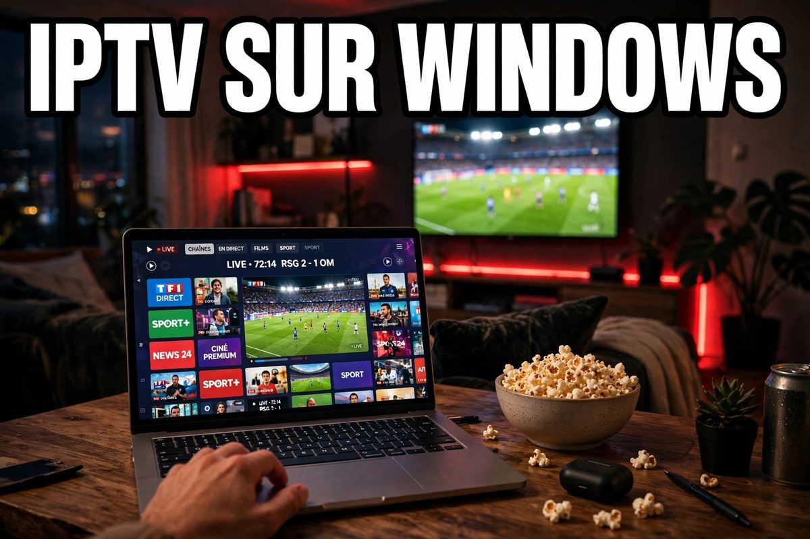
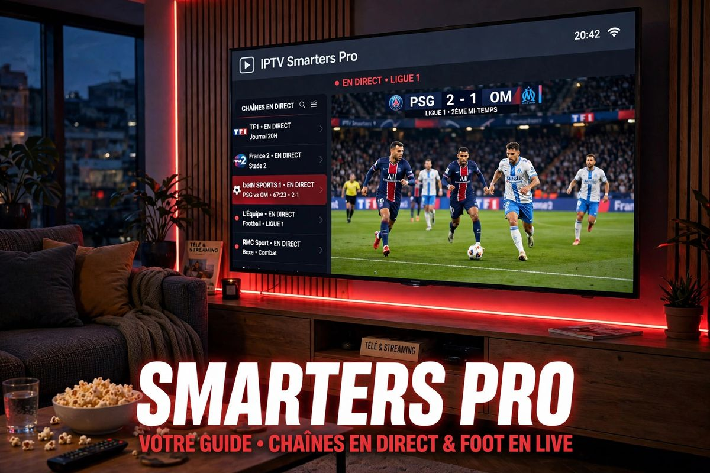

Installation Windows
Installer l’IPTV sur Windows
Téléchargement d’IPTV Smarters Pro sur le site officiel, connexion Xtream Codes, réglages recommandés et dépannage : regarder l’IPTV sur un ordinateur Windows.

L’IPTV sur Windows : votre ordinateur devient une télé
Un ordinateur portable ou un PC de bureau sous Windows suffit pour regarder l’IPTV : chaînes en direct, films, séries et guide des programmes, sans boîtier ni décodeur. C’est la solution idéale pour regarder un match dans votre bureau, profiter de votre abonnement Sunday IPTV dans une chambre sans télévision, ou relier l’ordinateur au téléviseur avec un simple câble HDMI.
Ce guide vous explique comment télécharger IPTV Smarters Pro depuis son site officiel, comment l’installer sur Windows, comment vous connecter avec vos identifiants Xtream Codes et quels réglages choisir pour une lecture fluide.
Ce qu’il vous faut avant de commencer
- un ordinateur sous Windows à jour (lancez Windows Update avant l’installation) ;
- une connexion internet : environ 10 Mb/s pour la HD et environ 25 Mb/s pour la 4K ;
- vos identifiants Sunday IPTV au format Xtream Codes : nom d’utilisateur, mot de passe et URL du serveur ;
- si possible, une connexion Ethernet (câble réseau) plutôt que le Wi-Fi, pour une stabilité maximale.
Télécharger IPTV Smarters Pro sur le site officiel
La version Windows d’IPTV Smarters Pro se télécharge uniquement sur le site officiel iptvsmarters.com. Ne la récupérez pas sur un site tiers ou un forum : un fichier modifié peut contenir un logiciel malveillant ou ne pas fonctionner correctement.
- Ouvrez votre navigateur (Edge, Chrome ou Firefox) et allez sur iptvsmarters.com.
- Rendez-vous dans la rubrique des téléchargements et choisissez la version Windows.
- Enregistrez le fichier d’installation : il arrive en général dans le dossier Téléchargements.
Installer l’application sur Windows
- Ouvrez le dossier Téléchargements et double-cliquez sur le fichier d’installation.
- Si Windows affiche le message « Windows a protégé votre ordinateur » (SmartScreen), vérifiez que le fichier vient bien du site officiel, puis cliquez sur Informations complémentaires et sur Exécuter quand même.
- Suivez les étapes de l’assistant d’installation jusqu’au bout.
- Lancez IPTV Smarters Pro depuis le raccourci créé sur le bureau ou depuis le menu Démarrer.
- Si le pare-feu Windows vous demande l’autorisation, autorisez l’application sur les réseaux privés : sans accès réseau, elle ne peut pas charger vos chaînes.
Se connecter avec Xtream Codes API
- Au premier lancement, acceptez les conditions d’utilisation.
- Choisissez Login with Xtream Codes API.
- Remplissez les champs : un nom de votre choix (par exemple « Sunday IPTV »), votre nom d’utilisateur, votre mot de passe et l’URL du serveur, avec http:// ou https:// et le numéro de port s’il y en a un.
- Cliquez sur Add User : l’application vérifie vos identifiants et charge votre catalogue.
- Depuis l’écran d’accueil, accédez à Live TV pour les chaînes en direct, à Movies pour les films et à Series pour les séries.
Retrouvez toutes les fonctions de l’application dans notre guide IPTV Smarters Pro.
Réglages recommandés
- Connexion filaire : branchez l’ordinateur en Ethernet, ou installez-vous près de la box internet si vous restez en Wi-Fi.
- Mettez à jour le guide des programmes après la première connexion, puis de temps en temps : le premier chargement peut prendre quelques minutes.
- Vérifiez la date, l’heure et le fuseau horaire de Windows (Paramètres, puis Heure et langue) : un mauvais fuseau décale tout le guide des programmes.
- Format du flux : si les chaînes coupent ou démarrent mal, essayez l’autre format de flux (par exemple MPEGTS ou HLS) lorsque votre version de l’application propose ce réglage.
- Branchez le portable sur secteur pendant la lecture : le mode économie de batterie peut réduire les performances et provoquer des saccades.
- Libérez la connexion : mettez en pause les gros téléchargements, les sauvegardes en ligne et les mises à jour pendant que vous regardez un match.
- Activez le contrôle parental dans les réglages de l’application si des enfants utilisent l’ordinateur.
- Gardez l’application à jour en téléchargeant les nouvelles versions depuis le site officiel.
Regarder sur la télé depuis votre PC
Votre ordinateur peut aussi afficher l’IPTV sur le grand écran du salon :
- Reliez le PC au téléviseur avec un câble HDMI.
- Sur la télécommande, sélectionnez l’entrée HDMI correspondante.
- Sur le PC, appuyez sur Windows + P et choisissez Dupliquer ou Deuxième écran uniquement.
- Lancez IPTV Smarters Pro et passez la vidéo en plein écran.
Si vous préférez une solution sans ordinateur branché en permanence, consultez nos guides pour Smart TV et Fire TV Stick.
Problèmes fréquents et solutions
Windows bloque l’installation
Le message SmartScreen apparaît souvent pour les applications téléchargées hors du Microsoft Store. Si le fichier vient bien de iptvsmarters.com, cliquez sur Informations complémentaires, puis sur Exécuter quand même. Si votre antivirus bloque le fichier, supprimez-le et téléchargez-le à nouveau depuis le site officiel.
« Identifiants incorrects » ou connexion impossible
Vérifiez chaque caractère du nom d’utilisateur et du mot de passe, ainsi que l’URL du serveur avec http:// ou https:// et le numéro de port. Vérifiez aussi que le pare-feu Windows autorise l’application à accéder au réseau.
Les chaînes coupent ou saccadent
Testez votre débit : il faut environ 10 Mb/s pour la HD et environ 25 Mb/s pour la 4K. Passez en Ethernet, fermez les téléchargements en cours, essayez l’autre format de flux, puis redémarrez l’ordinateur et la box internet. Si le problème persiste, consultez notre guide panne IPTV ou écrivez au support.
Le guide des programmes est vide ou décalé
Lancez une mise à jour du guide dans l’application, puis vérifiez la date, l’heure et le fuseau horaire de Windows.
Ça fonctionnait sur un autre appareil et plus sur le PC
Un abonnement fonctionne sur un appareil à la fois. Fermez l’application sur votre télé, votre box ou votre téléphone, puis relancez la lecture sur l’ordinateur.
Questions fréquentes
Où télécharger IPTV Smarters Pro pour Windows ?
Uniquement sur le site officiel iptvsmarters.com. Évitez les fichiers proposés sur d’autres sites : ils peuvent être modifiés ou contenir un logiciel malveillant.
Quel débit faut-il pour regarder l’IPTV sur un PC ?
Environ 10 Mb/s pour la HD et environ 25 Mb/s pour la 4K. Une connexion Ethernet donne la lecture la plus stable.
Puis-je regarder sur mon PC et sur ma télé en même temps ?
Non, un abonnement fonctionne sur un appareil à la fois. Vous pouvez l’installer sur plusieurs appareils et passer de l’un à l’autre. Si vous avez besoin de plusieurs écrans en même temps, écrivez-nous sur WhatsApp.
Où trouver mon URL de serveur, mon nom d’utilisateur et mon mot de passe ?
Ils vous sont envoyés par WhatsApp ou par e-mail après l’activation de votre abonnement. Pensez à vérifier vos spams.
Puis-je afficher l’IPTV de mon ordinateur sur ma télévision ?
Oui : reliez le PC à la télé avec un câble HDMI, puis appuyez sur Windows + P pour dupliquer l’écran.
Testez Sunday IPTV gratuitement
Essai gratuit de 24 heures, activation rapide et support 24/7 sur WhatsApp.
Demander mon essaiÀ lire aussi

IPTV Smarters Pro : installer et configurer
Connexion Xtream Codes, réglages du lecteur et astuces pour une lecture fluide sur IPTV Smarters Pro.

Panne IPTV : résoudre les coupures et le buffering
Les causes les plus fréquentes des coupures et la méthode pour les corriger soi-même.

Qu’est-ce que l’IPTV ? Explication complète (2026)
Comment fonctionne la télévision par internet, ce qu’il faut pour la regarder et en quoi elle diffère du satellite ou de la box.